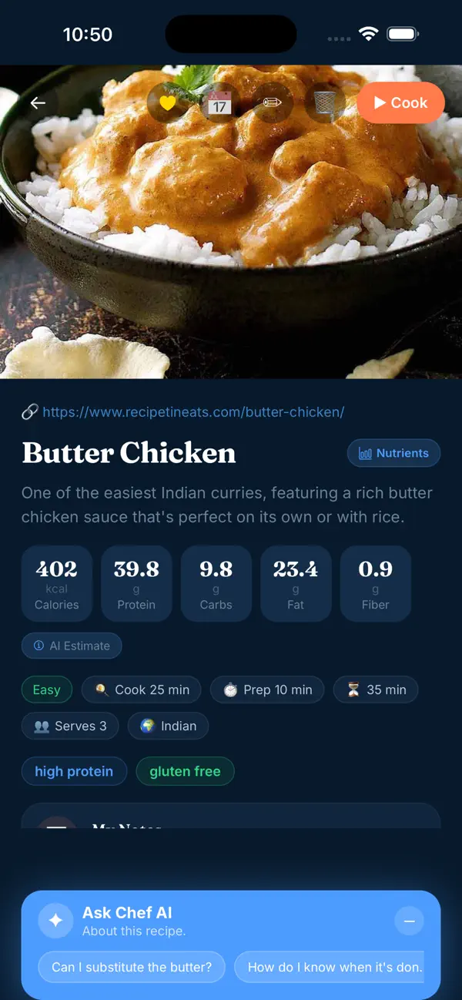

Nutrition estimates
How many calories are in that TikTok recipe?
The video shows you what to cook — not what it costs you nutritionally. Here's how that number actually gets calculated, and where the estimate comes from.
The problem
A recipe video is a cooking demo, not a nutrition label. Unless the creator manually types out macros in the caption (most don't), there's no built-in way to know the calories, protein, carbs, or fat in what you just watched — until you cook it, and by then it's too late to decide whether it fits your day.
How a recipe's nutrition is actually estimated
There's no shortcut around the underlying math — every recipe nutrition estimate, including MacroChef's, comes from the same basic process:
- List every ingredient at the quantity actually used — not the package size, the amount in the recipe (e.g. "2 tbsp olive oil," not "1 bottle").
- Look up nutrition for that exact quantity, ideally from a database like USDA FoodData Central rather than a guess.
- Sum every ingredient to get the total for the whole recipe.
- Divide by the number of servings the recipe makes, to get a per-serving number.
Why it's tedious to do by hand
A typical recipe has somewhere between 8 and 15 ingredients. That's 8 to 15 separate database lookups, plus unit conversions between cups, grams, and tablespoons, before you even get to step 4 above. Most people reasonably don't do this for every recipe they see — which means most TikTok recipes just never get checked.

What MacroChef does
MacroChef automates the four steps above. Share a recipe directly from TikTok (or paste the link), and it extracts the ingredients, steps, and a per-serving nutrition estimate — cross-referencing USDA FoodData Central and Open Food Facts where it can, and filling gaps with AI estimation where a direct database match isn't available.
It does the calculation for you. It doesn't claim to replace a lab measurement — no recipe-based estimate can — but it removes the 8-to-15-lookup manual process above entirely.
Try it on the next recipe you save
Free to download. Import from a website, TikTok, or Instagram.
Download MacroChef